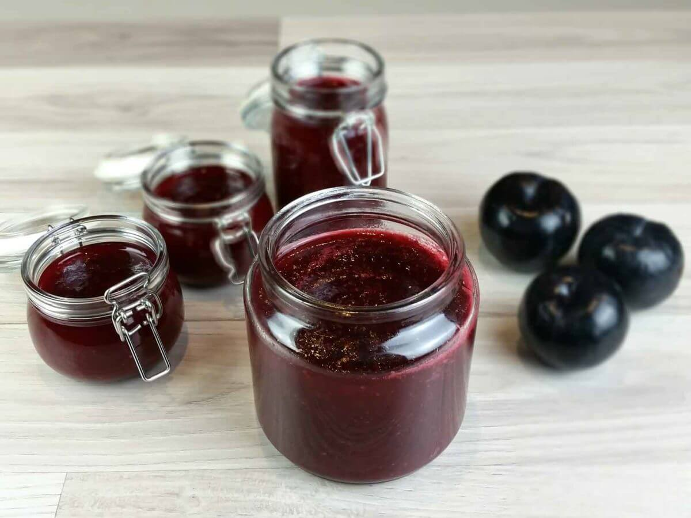

Make up jars of homemade confiture and gift to friends and family.
Lets talk about confiture.
A
confiture
is any fruit jam, the root of the word, comes from the French word
confire which means preserved
a confit being any type of food that is cooked slowly over a long
period of time as a method of preservation.
Oranges are available all year round for the preparation of refreshing
medicines, which are especially suitable as a filling for a cake.
Try this jam as a glaze for a chocolate cake, or dilute it with a
little whiskey as an amusing sauce for chocolate ice cream
Ingredients:
1kg of orange oranges in their entirety (or a mixture of citrus
fruits).
900 grams of sugar.
Juice from one lemon.
Preparation:
Boil a large pot with water. Prick the oranges and simmer until
boiling. Pour off the water and repeat the process two more times.
Refrigerators.
Cut the oranges in half and stone them.
Slice the orange halves into half rings.
Transfer the liquids to a heavy pot, including the liquids
dripping from the fruit while cutting.
Add the sugar to the fruit and bring to a boil. Cook until
certified.
Add the lemon and cook for another 5 minutes.
Black plum jam

This recipe is really a cross between plum jam and plum preserves. It
still has some of it’s preserve- like plum chunks,
but it’s nice and thick and spreads beautifully. It’s awesome paired
with breakfast pancakes or crepes.
Oh and this would make the sweetest Christmas gift!
Ingredients:
1kg plums (net after pitting).
900 grams of sugar.
Juice from one lemon.
Preparation:
Place the mouth in a heavy saucepan. Add the sugar. Light a high
flame for a minute and lower.
Cook until liquids are released from the fruit.
Increase the flame and bring to a boil, stirring the foam all the
time. Lower and cook over a low flame until the jam thickens.
Add the lemon and cook for another five minutes.
Grape jam
In fruits with a large amount of liquid, it is advisable to use the
technique of drying in the sun.
This way, especially in the arid regions of the country, it is
possible to obtain a thick jam that is extremely light in color.
Ingredients:
1kg of grapes without pits.
900 grams of sugar.
Juice from 2 lemons.
Option: 100 g of muscat grapes (as part of the total weight of the
fruit).
Preparation:
Put the sugar in a baking pan and place in a baking oven, preheated
to 150 degrees.
Put the grapes in a heavy saucepan and add the hot sugar. Cook over
low heat until boiling. Fold the foam all the while cooking.
When the jam starts to get a golden amber color, add the lemon juice
and cook for another 5 minutes.
Turn off the flame and transfer to flat pans. The height of the jam
should be 2-3 cm. Use two molds if necessary.
Transfer the molds to the sun. Cover the surface of the pan with a
baking sheet from the oven, and place a gauze cloth on it.
As darkness falls, the mold should be covered with plastic wrap. The
jam should be dried for several days, until it thickens. Occasional
gentle stirring will help to dry faster.